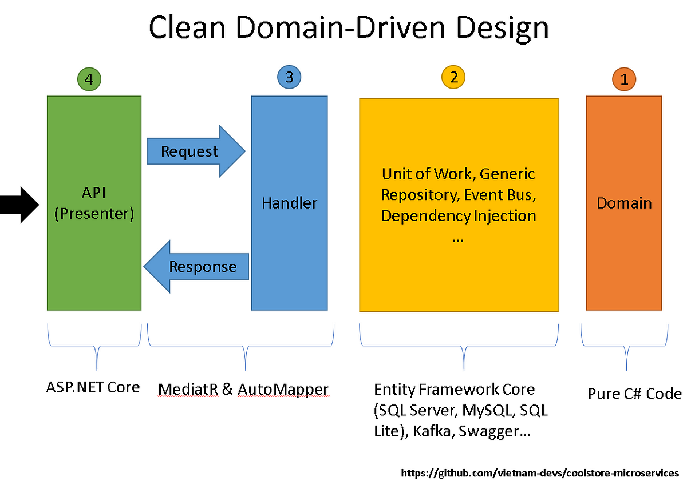

Kirjeldus
Domain-Driven Design (DDD) on tarkvaraarenduslähenemine, mis keskendub äridomeeni mõistmisele ja selle esindamisele koodis. DDD eesmärk on tihe koostöö arendajate ja äriekspertide vahel, et tagada süsteemi täpne ja järjepidev toimimine vastavalt ärinõuetele.
Arendustsükli joonis
Allolev joonis illustreerib Domain-Driven Design tsüklit:
Head ja vead
Head küljed
- Parandab arendajate ja äriekspertide vahelist suhtlust.
- Võimaldab luua selgelt struktureeritud ja ärikeskseid rakendusi.
- Toetab keerukate äriloogikate modelleerimist ja haldamist.
Halvad küljed
- Rakendamine võib olla keeruline ilma põhjaliku domeeniteadmiseta.
- Nõuab rohkem aega ja ressursse domeeni mõistmiseks ja modelleerimiseks.
- Ei pruugi sobida väiksemate ja lihtsamate projektide jaoks.
Case-vahend: EventStorming
EventStorming on tööriist ja tehnika, mida kasutatakse sageli Domain-Driven Designi kontekstis. See võimaldab visuaalselt kaardistada äridomeeni sündmusi, et hõlbustada domeeni mõistmist ja arendustööd.
EventStorming omadused
- Toetab äriekspertide ja arendajate tihedat koostööd.
- Soodustab kiiret domeeni avastamist ja dokumenteerimist.
- Aitab tuvastada äriprotsesside kitsaskohti ja võimalikke parendusi.
Näide EventStormingust:
1. Kogu meeskond koguneb ja algatab "sündmuste ajurünnaku".
2. Kaardistatakse kõik olulised sündmused, mis äridomeenis toimuvad.
3. Lisatakse täiendavad detailid, nagu osalejad ja vajalikud andmed.
4. Lõpuks koostatakse töövoog, mida saab kasutada arenduse juhisena.